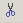
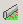

OptiChar Menu and Toolbar
OptiChar Menu and Toolbar
Navigation: General Information on OptiChar > OptiChar Menu and Toolbar |
` <idh_keys_assignment_oc.htm>`__ ` <idh_optilayer.htm>`__ ` <idh_popup_menu.htm>`__ |
When OptiChar starts, the main menu and toolbar are displayed. Most of the menu entries open pop-up sub-menus. The most frequently used commands are also accessible from the toolbar.
For details, click correspondent menu option or tool button in the picture or select an item from the following list.
` Configuration < idh_menu_config uration.htm>`__ |
Save As |
Print Preview |
|
Undo |
Redo |
|
 Cut |
Copy |
|
` Substrate <idh_edit_l ayer_material.htm>`__ |
||
 Layer Material |
||
 Paste
Paste